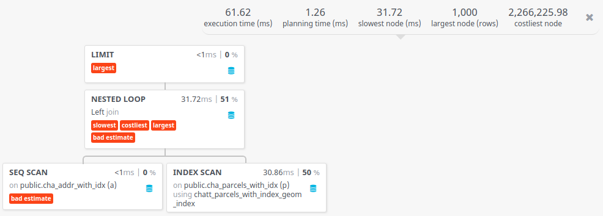
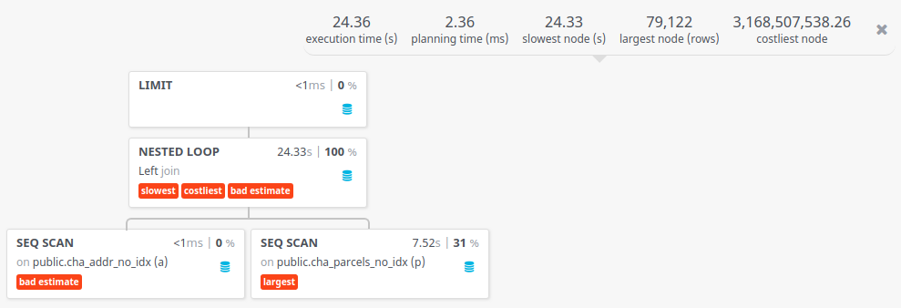
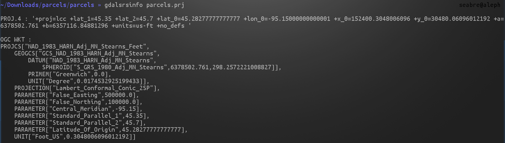
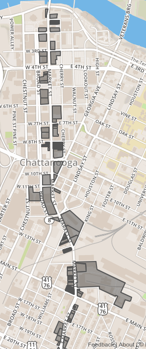
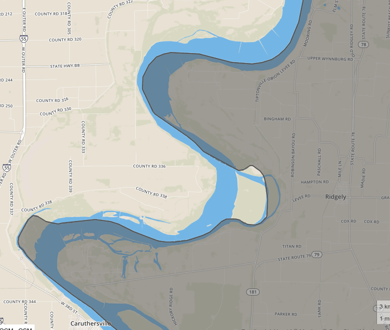
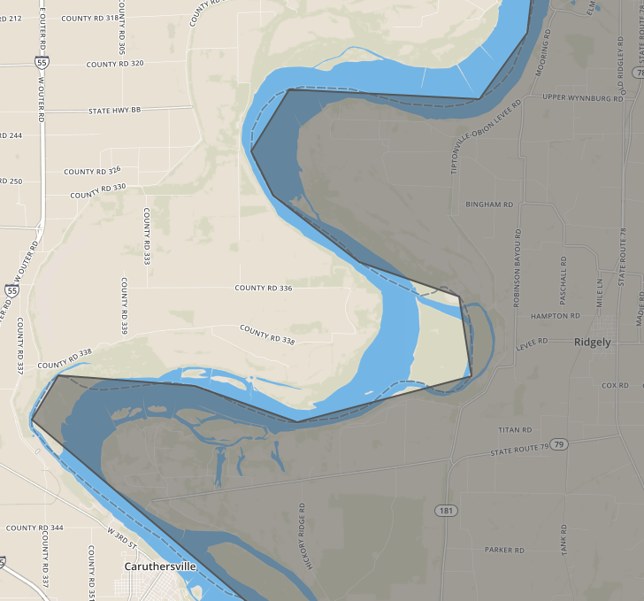
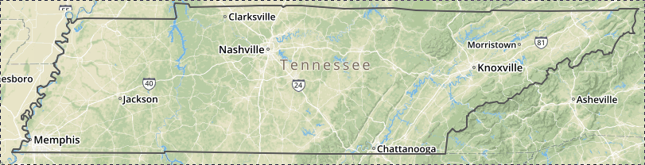
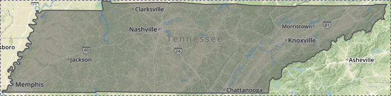
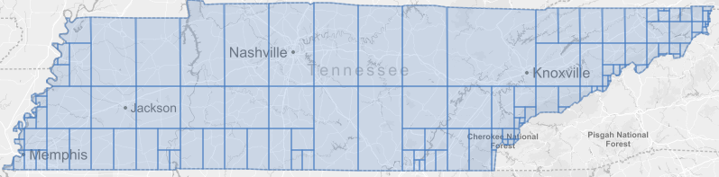
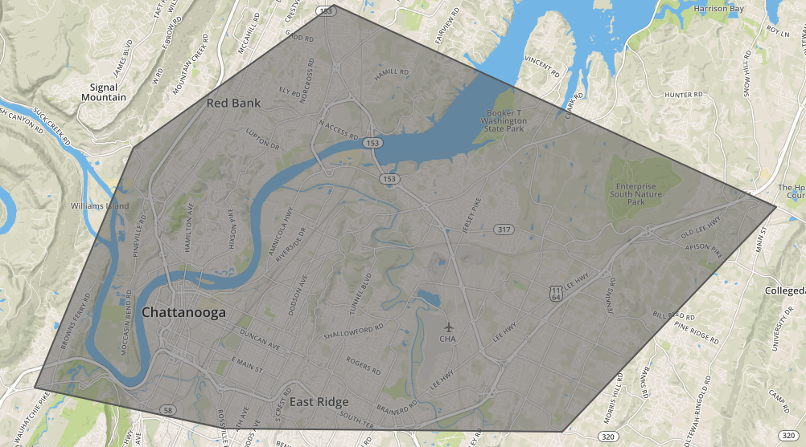

"Hey, where are these spatial indexes?"
Adventures of PostGIS in Production
I want to try my best to address most of these issues.
EXPLAIN ANALYZE to figure out if an index on a column will help.EXPLAIN ANALYZE SELECT * FROM my_table;Should you index your geometry columns?
Let's compare two similar queries. The only difference is one query's tables don't have spatial indexes. The other's does.
SELECT *
FROM cha_addr_with_idx a
LEFT JOIN cha_parcels_with_idx p ON ST_Contains(p.geom, a.wkb_geometry) LIMIT 1000;Average Runtime: 49.088ms

SELECT *
FROM cha_addr_no_idx a
LEFT JOIN cha_parcels_no_idx p ON ST_Contains(p.geom, a.wkb_geometry) LIMIT 1000;Average Runtime: 24,546.889ms

CREATE INDEX cha_addr_no_idx_wkb_geometry_index
ON public.cha_addr_no_idx
USING GIST (wkb_geometry);UpdateGeometrySRID. e.g. SELECT UpdateGeometrySRID('my_table','my_geo_column', 4326);ST_Transform e.g. SELECT ST_Transform(my_geo_column, 4269) FROM my_table;SELECT my_geo_column::geography from my_table;I don't know what SRS my data is. How can I find out?
Two options:
SELECT ST_SRID(geom) from my_table;The SRS I want doesn't exist but I really want to use it.
You need to insert a record into the spatial_ref_sys table, which has the following definition:
CREATE TABLE spatial_ref_sys (
srid INTEGER NOT NULL PRIMARY KEY,
auth_name VARCHAR(256),
auth_srid INTEGER,
srtext VARCHAR(2048),
proj4text VARCHAR(2048)
)Let's use North America Albers Equal Area Conic as an example. You need to know:
If you don't have any of these handy, http://epsg.io is a good resource.
Or if you have a shapefile with a .prj file, you can run gdalsrsinfo on it

With that info, if we have what we need we can add our SRS.
INSERT into spatial_ref_sys (srid, auth_name, auth_srid, proj4text, srtext) values (102008, 'ESRI', 102008, srtexthere, proj4texthere);
And we can transform an existing geometry to that SRS.
SELECT ST_Transform(geom, 102008) FROM my_table;_ST_BestSRIDST_Buffer: http://postgis.net/docs/PostGIS_Special_Functions_Index.html#PostGIS_TypeFunctionMatrixSELECT ST_Transform(ST_Transform(geom, _ST_BestSRID(geom)) from my_tableSELECT ST_AsGeoJSON(geom) AS my_geojson FROM my_table;| my_geojson |
|---|
| {"type":"Point","coordinates":[-85.233605,35.0832938]} |
| {"type":"Point","coordinates":[-85.2724527,35.0493086]} |
| {"type":"Point","coordinates":[-85.2853555,35.0377829]} |
| {"type":"Point","coordinates":[-85.3018474,35.0192342]} |
SELECT row_to_json(fc)
FROM (SELECT 'FeatureCollection' AS type, array_to_json(array_agg(f)) AS features
FROM (SELECT 'Feature' AS type,
ST_AsGeoJSON(mt.geom) :: json AS geometry,
row_to_json((SELECT t FROM (SELECT my_table_id, my_table_item) AS t)) AS properties
FROM my_table AS mt) AS f) AS fc;
Let's say we want to grab all parcels on Market St. and display that as GeoJSON
SELECT row_to_json(fc)
FROM (SELECT 'FeatureCollection' AS type, array_to_json(array_agg(f)) AS features
FROM (SELECT 'Feature' AS type,
ST_AsGeoJSON(chas.geom) :: json AS geometry,
row_to_json((SELECT cha FROM (SELECT gid, mastname, macity, 'TN' AS state) AS cha)) AS properties
FROM cha_parcels_with_idx AS chas
WHERE macity = 'CHATTANOOGA'
AND typesfx = 'ST'
AND stname = 'MARKET') AS f) AS fc;
PostGIS has ST_Simplify which implements the Ramer-Douglas–Peucker simplification algorithm:
geometry ST_Simplify(geometry geomA, float tolerance);

ST_ExteriorRing takes a polygon and converts it to an outline.ST_MakePolygon takes an outline and converts it to a polygon.
SELECT ST_ExteriorRing(geom) FROM tennessee_whole;
SELECT ST_MakePolygon(geom) FROM tennessee_whole_line;ST_Subdivide(geometry geom, integer max_vertices=256);

Let's say I want to figure how how many Subway restaurants there are in Chattanooga.
SELECT count(DISTINCT(geom))
FROM cha_businesses
WHERE "business n" LIKE '%SUBWAY%'
AND city = 'CHATTANOOGA'Yields 31.
So what area does that cover exactly? Can we visualize that?
SELECT ST_ConvexHull(ST_Collect(geom))
FROM cha_businesses
WHERE "business n" LIKE '%SUBWAY%'
AND city = 'CHATTANOOGA'
What if I'm at the aquarium and I want to find the closest Subway so I can get a sandwich.
SELECT ST_Distance(ST_Transform(geom, 3662),
ST_Transform(ST_SetSRID(ST_MakePoint(-85.311086, 35.055753), 4326), 3662)) / 5280 AS d,
"business n",
"street dir",
"street num",
"street nam",
"street suf",
"city",
"state",
"zip"
FROM cha_businesses
WHERE "business n" LIKE '%SUBWAY%'
AND city = 'CHATTANOOGA'
ORDER BY ST_Transform(geom, 3662) <-> ST_Transform(ST_SetSRID(ST_MakePoint(-85.311086, 35.055753), 4326), 3662)
limit 10;| d | business n | street dir | street num | street nam | street suf | city | state | zip |
|---|---|---|---|---|---|---|---|---|
| 0.5168637644049433 | SCENIC CITY SUBWAY #16282 | NULL | 208 | FRAZIER | AVE | CHATTANOOGA | TN | 37405 |
| 0.6542807510309095 | CHATTANOOGA SUBWAY #4014 | NULL | 850 | MARKET | ST | CHATTANOOGA | TN | 37402 |
| 0.6542807510309095 | SUBWAY SANDWICHES AND SALADS | NULL | 850 | MARKET | ST | CHATTANOOGA | TN | 37402 |
| 1.261728424758831 | SUBWAY | E | 979 | 3RD | ST | CHATTANOOGA | TN | 37403 |
| 2.511786963294291 | SCENIC CITY SUBWAY 2267 | NULL | 3127 | BROAD | ST | CHATTANOOGA | TN | 37408 |
| 2.750917870740592 | SUBWAY #25008 | NULL | 2610 | AMNICOLA | HWY | CHATTANOOGA | TN | 37406 |
| 2.8590235205819137 | MELISSA'S SUBWAY, LLC | NULL | 2333 | MCCALLIE | AVE | CHATTANOOGA | TN | 37404 |
| 2.8590235205819137 | CHATTANOOGA SUBWAY #53183 | NULL | 2333 | MCCALLIE | AVE | CHATTANOOGA | TN | 37404 |
| 2.9490039641986137 | SUBWAY #40655 | NULL | 601 | SIGNAL MOUNTAIN | RD | CHATTANOOGA | TN | 37405 |
| 3.0175841895129123 | CHATTANOOGA SUBWAY #60915 | NULL | 2525 | DE SALES | AVE | CHATTANOOGA | TN | 37404 |
FIN